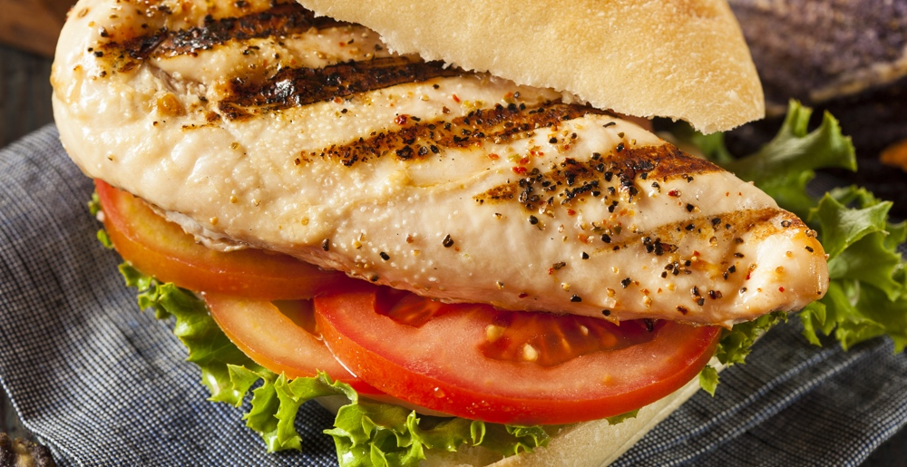

Chicken Sandwich

Description
This here is the world's best chicken sandwich you done ever gonna taste. It is water mouthin, fire breathin, moist collecting
gosh darn sandwich. you gon' regret never makin' this darn sandiwch.
I DONE SAY YOU GON REGRET IT IF YOU DON'T MAKE IT!
Ingredients
- cooking spray
- 8 slices bacon
- 2 teaspoons poultry seasoning
- 4 skinless, boneless chicken breast halves
- 4 slices pepper Jack cheese
- 4 hamburger buns, split
- 4 leaves of lettuce
- 4 slices tomato
- ½ cup thinly sliced onions
- 12 slices dill pickle
Steps
- Preheat an outdoor grill for medium heat and lightly oil the grate with cooking spray.
- Meanwhile, cook bacon in a large skillet over medium-high heat until browned and crispy, 7 to 10 minutes. Drain on a paper towel-lined plate.
- While the bacon is cooking, rub poultry seasoning onto chicken.
- Cook chicken on the preheated grill until no longer pink in the center and the juices run clear, about 6 minutes per side.
An instant-read thermometer inserted into the center should read at least 165 degrees F (74 degrees C).
Top each chicken breast with 2 slices bacon and 1 slice pepper Jack cheese; close the lid and cook until cheese is melted, 2 to 3 minutes.
- Remove chicken from the grill and place on buns. Top with lettuce, tomato, onions, and pickle slices.